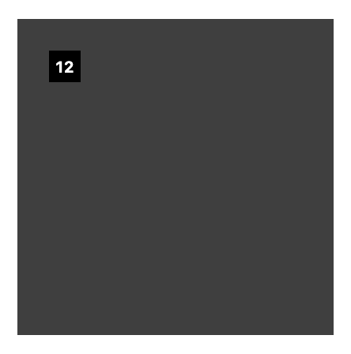
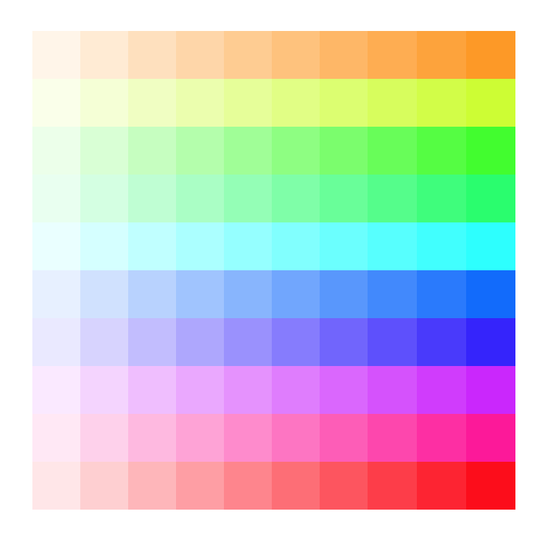

DRY-ing up code
Custom Properties are great for defining constants, and then re-using those constants throughout a CSS document.
Uncomment the code in dry.css and convert as many values as you can to Custom Properties. Remember to only use the same Custom Properties for elements that are related.
The result should look like this (if you hover your cursor over the 12th cell).

Colours and inheritance
I've tried to create the following rainbow pattern using Custom Properties and hsla().

I can't figure out how to change the hue per row without creating at least 100 different selectors!
Here are the details you need to get started:
- Structure
- There 10 rows, each row contains 10 anchors, totalling 100 anchors.
- Colouring
-
A
background-coloris set on all anchors using 1 selector . - Hue
-
This starts at
36degfor the first row. -
This increases by
36degper row. -
The last row has a hue of
360deg - Saturation
-
This is constant for all anchors, at
100% - Lightness
-
This is constant for all anchors, at
50% - Alpha
-
This starts at
0.1for the first anchor in each row. -
This increases by
0.1per anchor in the row. -
The last anchor in each row has an opacity of
1.0
You'll need to change the CSS in mosaic.css so that we only use the background-color in one selector, then using other selectors to modify the hue and alpha custom properties for each anchor.